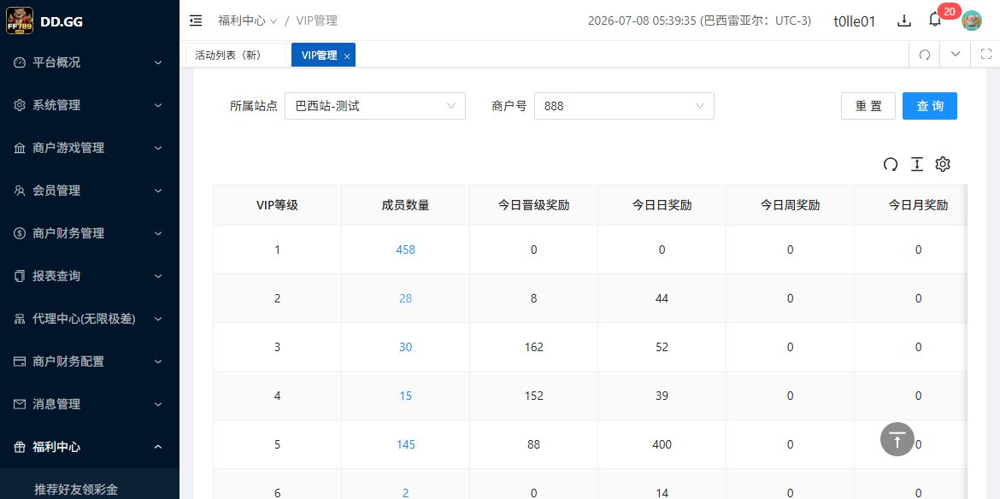
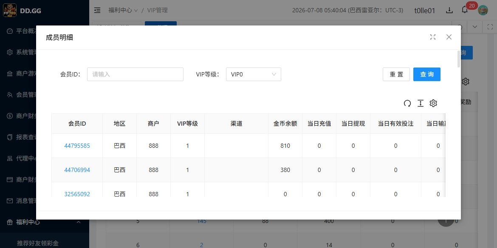
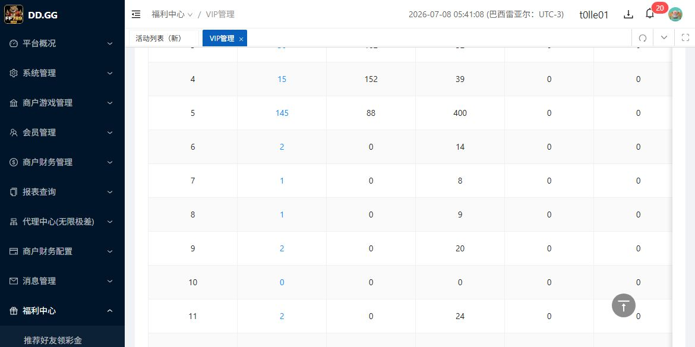
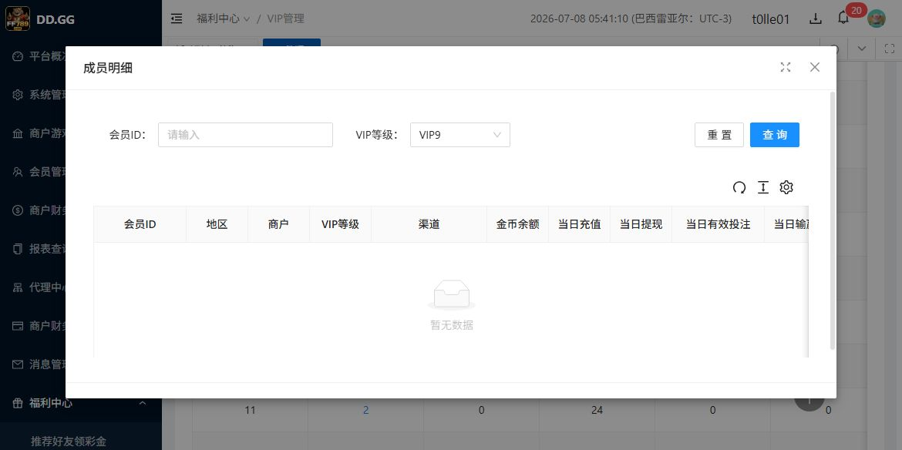

VIP管理 / 查看会员 / 成员数量 - 测试执行报告
需求点摘要
| 编号 | 需求规则 | 执行结论 |
|---|---|---|
| R1 | VIP 列表按照 VIP 等级从低到高显示。 | 通过：当前列表显示 1 到 12，顺序升序。 |
| R2 | VIP 等级读取 VIP 配置，例如 VIP1 显示 1、VIP2 显示 2。 | 列表通过：VIP等级列显示 1、2、3 ... 12。 |
| R3 | 成员数量显示该 VIP 等级下的会员数量。 | 部分可见验证：列表有成员数量；弹框数据与列表等级存在显示错位，影响数量一致性判断。 |
| R4 | 成员数量非 0 时，数字蓝色且可点击。 | 通过：非 0 数量为蓝色按钮，鼠标指针为 pointer，可打开成员明细。 |
| R5 | 点击非 0 成员数量后，弹出查看会员弹框。 | 不通过：可弹框，但 VIP1 的成员明细筛选显示为 VIP0，等级上下文错误。 |
| R6 | 弹框应展示该 VIP 等级里所有状态的会员。 | 受限：弹框表格未展示会员状态字段，仅可验证可见会员行的 VIP等级列。 |
| R7 | 成员数量为 0 时，不可点击，点击不应出现弹框。 | 不通过：VIP10 成员数量 0 仍为蓝色 pointer 按钮，点击后出现成员明细弹框。 |
已完成观察
| 观察项 | 实际结果 | 证据 |
|---|---|---|
| 列表初始状态 | 页面路径正确，站点为巴西站-测试，商户号 888。VIP 列表显示 1-12，共 12 条。 |  |
| 非 0 成员数量 | VIP1 成员数量 458 为蓝色按钮，可点击打开成员明细；弹框内会员行 VIP等级列为 1，但筛选区显示 VIP0。 |  |
| 0 成员数量 | VIP10 成员数量 0 为蓝色 pointer 按钮。 |  |
| 点击 0 成员数量 | 点击 VIP10 的 0 后打开成员明细弹框，弹框筛选区显示 VIP9 且暂无数据。 |  |
发现的问题
| ID | 标题 | 严重性建议 | 影响 |
|---|---|---|---|
| BUG-001 | 查看会员弹框 VIP 等级筛选显示比列表等级小 1 | Major | 用户难以确认当前查看的 VIP 等级，影响成员明细与数量一致性的判断。 |
| BUG-002 | 成员数量为 0 仍显示为可点击蓝色按钮，点击后弹出成员明细 | Major | 违反 0 不可点击且不弹框的验收规则。 |
开发可读缺陷单见 bug-tickets.html。
测试用例结果
| 用例 | 检查点 | 结果 | 说明 |
|---|---|---|---|
| TC-01 | VIP 等级升序 | 通过 | 可见列表为 1-12 升序。 |
| TC-02 | VIP 等级显示口径 | 部分失败 | 列表显示正确；弹框筛选显示存在 off-by-one。 |
| TC-03 | 非 0 数量样式与点击 | 部分失败 | 蓝色可点击通过；弹框等级上下文错误。 |
| TC-04 | 0 数量样式与点击 | 失败 | 0 仍蓝色可点击，且点击后出现弹框。 |
| TC-05 | 成员明细展示该等级会员 | 受限 | 可见会员行 VIP等级与点击等级一致，但筛选区显示错位；页面未提供状态字段，无法确认“所有状态”。 |
残余风险
| 风险 | 说明 |
|---|---|
| 全状态会员无法完全验收 | 成员明细表未展示会员状态字段，也未提供可读状态筛选或后台数据基准；只能确认可见会员行等级。 |
| 数量总数一致性未完全验收 | VIP1 列表数量为 458，弹框分页仅显示 50 条/页；受弹框等级显示错位影响，未继续做全页计数。 |